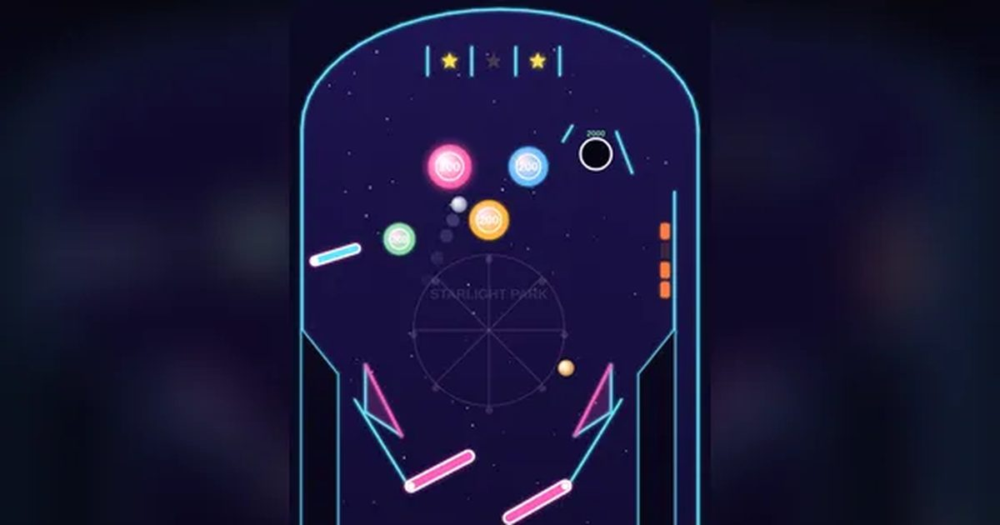

추억의 핀볼
Retro Pinball
아케이드 · 핀볼무료설치 없음폰 · PC
▶ 지금 바로 하기로그인 없이 브라우저에서 바로 시작돼요
어떤 게임인가요?
길어진 2층 별빛 놀이공원 테이블! 플리퍼 4개로 공을 지키며 범퍼 · 과녁 · 구멍을 노리세요. 위쪽 별 3개를 모두 켜면 공 두 개가 동시에 도는 멀티볼, 과녁 4개를 모두 넘기면 점수 배수 UP. 공은 3개.
목표 · 공을 떨어뜨리지 않고 오래 살려 범퍼 · 과녁 · 구멍을 맞혀 최고 점수를 노리세요.
이렇게도 찾아요
핀볼핀볼 게임핀볼 무료pinballclassic pinballspace pinball
#핀볼 #추억의게임 #레트로게임
게임 방법
- 화면 왼쪽을 누르면 왼쪽 플리퍼 2개(아래 · 왼쪽 벽 보조), 오른쪽을 누르면 오른쪽 플리퍼가 올라가요.
- 공이 오른쪽 발사대에 있으면 꾹 눌렀다 떼서 발사. 오래 누를수록 세게 나가요.
- 범퍼 100점 · 슬링샷 50점 · 과녁 500점 · 위쪽 별 300점 · 오른쪽 위 구멍 2000점. 점수에 배수가 곱해져요.
- 위쪽 별 3개를 모두 켜면 멀티볼! 공 두 개가 동시에 돌고 그동안 점수 2배.
- 오른쪽 과녁 4개를 모두 쓰러뜨리면 +5000과 배수 UP (최대 ×9).
- 공이 가운데나 양옆 바깥 길로 빠지면 한 개를 잃어요. 공은 3개, 공마다 처음 6초는 빠져도 다시 줘요.
등장하는 것들
- 범퍼 · 100점 · 세게 튕김
- 슬링샷 · 50점
- 과녁 · 4개 모두 → 배수 UP
- 별 · 3개 모두 → 멀티볼
- 구멍 · 2000점 · 잠깐 붙잡았다 쏴 줘요
공략 팁
- 공이 플리퍼 끝쪽에 왔을 때 치면 멀리 날아가요.
- 공이 플리퍼 위에 멈췄을 때 잠깐 들고 있다가 노려 치세요.
- 멀티볼 땐 아래로 더 가까운 공부터 막으세요.
- 양옆 바깥 길로 빠지는 공은 못 살려요. 가운데로 모으세요.
 막대 파이터
막대 파이터 골목 대장
골목 대장 공룡 달리기
공룡 달리기 코너킹 드리프트
코너킹 드리프트 폴짝 개구리
폴짝 개구리 링 파이터
링 파이터